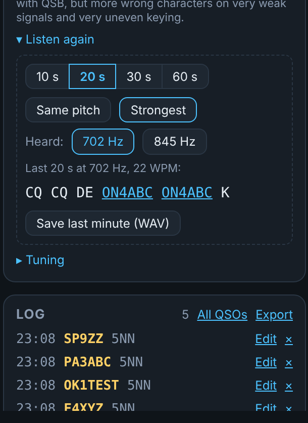
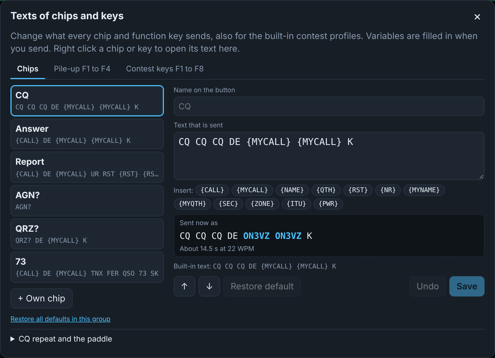
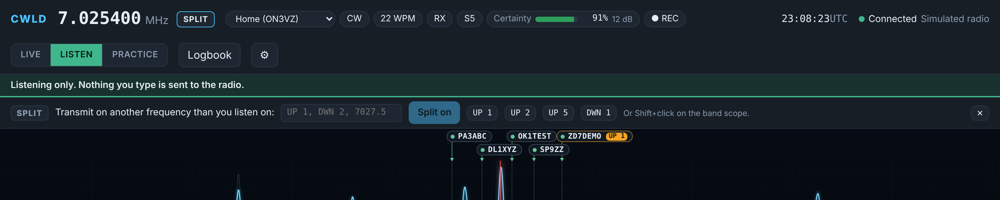
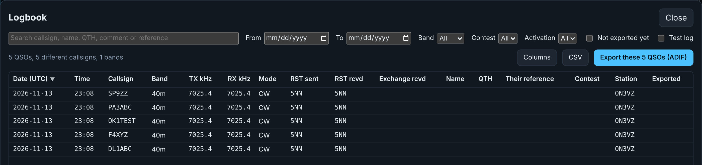

MModes
LIVE
The only mode that transmits. Always shown in red.
LISTEN
Receive and decode only. Safe for listening and testing.
PRACTICE
Simulated stations through your headphones. Nothing leaves your computer.

KKeys
| Key | What it does |
|---|---|
| Esc | Stop sending at once |
| Enter | Contest: send the right message for the moment (Run: CQ, exchange, AGN?, then TU and log) |
| Space | Contest: next field in the entry line |
| F1 to F8 | Contest: CQ (S&P: your call), exchange, TU and log, your call, his call, QSO B4, NR?, AGN |
| Ctrl+R | Contest: switch between Run and S&P |
| Ctrl+W | Contest: clear the entry line |
| Ctrl+F6, Ctrl+F7 | Contest: decoder Strongest and AFC |
| Alt+R | Repeat CQ with a pause and a countdown. Stops at any key, the paddle or an answer |
| Insert | Contest: send his callsign and your exchange in one go |
| . | Contest: send TU and log, only when the exchange is complete. Outside contest mode it only logs |
| PgUp, PgDn | Speed 2 WPM faster or slower (5 to 60) |
| Ctrl+Up, Ctrl+Down | Tune to the next spot above or below on this band |
| Alt+Q | Back to the frequency where you last called CQ, split off |
| Alt+F7 | Split off, or open the split bar |
?Questions
CWLD does not find the radio
Check that the radio is on and the cable carries data. Open Device Manager (right-click Start) and look under Ports (COM & LPT). Choose the first port in CWLD, and if there is no answer, the second one. Check that the CI-V address is B6.
The frequency on the screen does not follow the radio
Switch CI-V Transceive on in the radio: MENU, SET, Connectors, CI-V. CWLD also asks the radio for the frequency now and then, but Transceive makes it instant.
The waterfall is empty and nothing is decoded
In Settings, Audio, choose USB Audio CODEC and click Restart with these settings. Then check the three microphone privacy switches of Windows and turn audio enhancements off. Make sure the radio has a CW signal in its filter and that the AF level is not zero.
Windows or my antivirus blocks the installer
CWLD is not code signed yet, so Windows is careful. Click More info, then Run anyway. If an antivirus removes the file, compare its SHA-256 checksum with the one on the download section and allow the file.
Does CWLD transmit by itself?
No. Only the LIVE mode transmits, and only when you type, press a key or click a chip. Esc stops at once. LISTEN and PRACTICE never transmit.
Does my paddle still work?
Yes. The keyer of the radio works on its own and CWLD never blocks it.
Where is my data?
Everything stays on your computer. Settings and the logbook (logbook.db, with a backup copy at every start) are in %APPDATA%\io.github.on3vz.cwld. Recordings go to Documents\CWLD. Press Windows+R, paste the folder name and press Enter to open it.
I missed a callsign, can I hear it again?
Yes. Open Listen again in the Audio card and read the last 10 to 60 seconds again, also at another pitch. Save last minute (WAV) keeps it as a file.
A strong station next to mine disturbs the decoder
Choose Steep next to Narrow and Wide in the Audio card. It has the narrow width but much steeper edges.
Can I change the texts of the F keys and chips?
Yes. Right click a chip or key, or click the pencil. It also works for the contest keys of the built-in profiles, and Restore default brings the original back.
The DX station works split, what do I do?
Click the label of its spot on the band scope when it has an amber badge such as UP 1. Otherwise click SPLIT and type UP 1. Split off or Alt+F7 switches it off, Alt+Q goes back to your CQ frequency.
Can I open this page from the app?
Yes. In Settings, choose Updates and about and click Open the help page. It opens this page in your browser, in the language of the app.
How do I update?
Download the newest installer from the home page and run it over the old version. Your settings and logbook stay.
How do I get my QSOs into my logger?
Use the export function of the logbook. It writes an ADIF file, after a check window that lists errors and warnings. Import that file in Log4OM or any other logger.
CContest
Switch contest mode on and choose a contest profile. The entry line takes callsign, report, serial number and the extra field of the profile. The serial number goes up when you log, not when you send. A red DUPE shows the same call on the same band, and logging stays possible.
Test mode (orange) writes to a separate test log that never counts for dupes and never reaches the export.
PPortable
Choose the profile Home or Portable in the status bar. For an activation (WWFF/ONFF, POTA, SOTA) fill in the reference and the grid. Both are written into every QSO, and a check window before the ADIF export catches missing grids or bad references.
OPractice
PRACTICE decodes a simulated band and plays it on your computer. Nothing is transmitted, so turn the AF knob of the radio down. Choose an exercise, a speed range and a signal strength, and see your score at the end. Turn decoder help off to copy by ear.

RListen again
CWLD keeps the last minute of audio. Open Listen again in the Audio card, choose how far back (10, 20, 30 or 60 seconds) and click Same pitch, Strongest or one of the pitches under Heard. A separate decoder reads that stretch again, so the live decoder is not disturbed. Callsigns in the result can be clicked.
Save last minute (WAV) writes the last minute (8 kHz, mono) to your recordings folder, with date, time and frequency in the name.
Two settings help with a strong neighbour and with spelled callsigns: the filter choice Steep (the narrow width with much steeper edges, a station 60 Hz away is about 40 dB weaker than with Narrow) and Join spelled letters, which shows D L 4 S A V as DL4SAV.

TTexts and CQ repeat
Right click any chip or function key, or click the pencil, to edit what it sends. This also works for the contest keys F1 to F8 of the built-in profiles. Use the variables {CALL}, {MYCALL}, {NAME}, {QTH}, {RST}, {NR}, {MYNAME} and {MYQTH}. The window shows what will be sent with today's values and how long it takes, and warns about unknown variables, characters the radio cannot send and loose brackets. Restore default works per item and per group.
Repeat CQ (Alt+R) calls CQ, listens with a countdown and calls again (pause 2 to 60 s, at most 1 to 30 calls). It never starts by itself and stops at any key, at the paddle, at an answer, at Stop, at an SWR alert and after the last call.
Text you type while the paddle keys waits under Waits for the paddle and goes out when the paddle has been quiet for 14 dot lengths. Esc clears it.

SSplit
With split the radio listens on one frequency and transmits on another, as a DX station in a pile-up asks. A spot whose comment says UP 1, UP 1-2, DWN 2 or QSX 7027.5 gets an amber badge on its label, and one click sets the receive frequency, the transmit frequency and split. By hand: click SPLIT, type UP 1, -2 or a frequency and press Enter, or hold Shift and click on the band scope.
While split is on, an amber bar shows both frequencies and the button Split off. CWLD refuses a transmit frequency outside the band and changes nothing while the radio transmits. Split set on the radio itself shows up in CWLD too. Not yet tried on the radio: tests A68 to A70.

LLogbook
Click Logbook next to the gear. Search, filter by date, band, contest or activation, sort by a column header and choose the columns with Columns. Click a row to change every field of a QSO. Export these N QSOs (ADIF) writes exactly what the filter shows, CSV writes a semicolon separated file that Excel opens correctly.
Every QSO has a transmit frequency (TX kHz) and a receive frequency (RX kHz). They differ for a split QSO. ADIF FREQ is the transmit frequency, a split QSO also gets FREQ_RX.

DCountry and distance
Next to a callsign CWLD shows the country, the direction and the distance, for example Germany EU 75° ~407 km. The country comes from a prefix table that understands portable calls (ON3VZ/P, EA8/ON3VZ). Direction and distance start from your locator (fill it in under Settings, Station). With a locator from QRZ.com they go to the station itself, otherwise to the middle of the country, and the ~ sign says that it is rough. The table is made by hand and can have gaps for special prefixes. Everything stays on the screen.
In contest mode a reminder appears that in some contests a decoder counts as assistance or is not allowed. Read the rules of the contest and choose your class yourself.